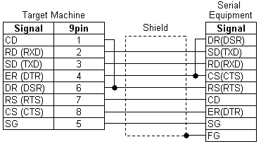

|
|
|
|
|
|
|
|
The script driver is a generic serial communication driver that allows you to communicate with simple serial equipment. Below, you can find information on how to connect a script driver cable to your target machine.

On all target machines, it is not possible to use COM1 port for both the script driver and the target printer. If you set both to COM1, both will fail to print in runtime.
To use the script driver to send messages to a printer, the printer must have at least two communication ports: one for the script driver, one for the target printer. The script driver must use a serial port. The target printer can use USB, USB SIO, or USB PIO.
Connect serial equipment to the COM1 port with the Schneider Electric XBTZG9731 cable, or with a user-made cable following the connections in the diagram below.

When making RS-422/485 (4-wire) connections on target machines, create the following cable and connect it to the COM2 port on the target machine.


The RS-422/485 (4-wire) cable connections are for typical RS-422 serial equipment. Refer to the manual of your serial equipment for actual RS-422 (4-wire) cable connections.
Depending on the serial equipment you're connecting and the length of the cable, you may require termination resistance of 1/4W 330W on the target machine between RDA and RDB, and between SDA and SDB.
When making RS-422/485 (2-wire) connections on target machines, create the following cable and connect it to the COM2 port on the target machine.


The RS-422/485 (2-wire) cable connections are for typical RS-422/485 serial equipment. Refer to the manual of your serial equipment for actual RS-422 (2-wire) cable connections.
Depending on the serial equipment you're connecting and the length of the cable, you may require termination resistance of 1/4W 330W on the target machine between RDA and RDB, and between SDA and SDB.